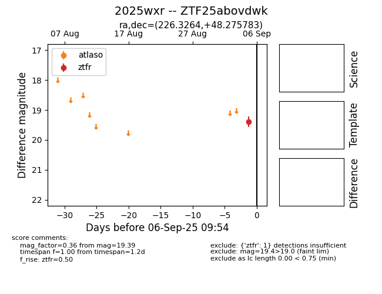

FINK: ZTF25abovdwk
Lasair: ZTF25abovdwk
ALeRCE: ZTF25abovdwk
TNS: 2025wxr
YSE: 2025wxr
ZTF25abovdwk (ztf,fink)
2025wxr (tns,yse)
equatorial (ra, dec) = (226.3264,+48.27578)
galactic (l, b) = (81.1734,+56.55854)

last ztfg=19.31, ztfr=19.39
1 ztfg, 1 ztfr detections